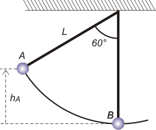

NO ME SALEN
PROBLEMAS RESUELTOS DE FÍSICA DEL CBC
(Leyes de conservación, energía mecánica)
|
|

|
Adicional NMS 30* - Un péndulo ideal está formado por una masa m colgada de un hilo inextensible y sin masa. No hay fricción. Si se aparta la masa 60° respecto de la posición de equilibrio y se la suelta, la tensión del hilo en la posición más baja de la trayectoria valdrá aproximadamente:
a) T = 2 mg b) T = 4 mg c) T = 3 mg d) T = ½ mg e) T = mg f) T = 0 |
|
|
*Este ejercicio fue tomado en el examen final de Física de julio de 2011.
Para ver el tema de examen completo hacer click acá. |
|
|
| Bien, arranquemos como siempre con un esquema, que sirve, entre otras cosas, para ponerle nombre a los eventos y elementos que vamos a usar después en el desarrollo (¿y si no cómo sabés de qué estoy hablando?). |
|
|
|  |
Ahí tenemos el péndulo que es soltado desde la posición A (apartado de la vertical 60° hasta la posición B, con el hilo vertical).
Para saber con qué velocidad pasa por B hay que plantear la conservación de la energía mecánica.
EMA = EMB
O sea:
EcA + EpA = EcB + EpB
|
|
|
|
½ m vA² + m g hA = ½ m vB² + m g hB
Como el enunciado dice que el péndulo se suelta, el ptimer término vale cero. Y si tomamos como nivel cero de alturas la posición B, el último término también se anula.
m g hA = ½ m vB²
Si mirás el triángulo formado por el hilo en la posición A, la vertical y una horizontal que pasa por A, coincidirás conmigo que:
hA = L (1 — cos 60°) (si no entendés esto podés mirarlo aquí)
hA = ½ L
Meto eso en la anterior y cancelo los factores comunes me queda:
g L = vB² [1]
Donde L es el largo del hilo. Quedémosnos ahí. Vamos a la dinámica. El DCL del péndulo en su posición más baja: |
|
|
 |
Nos dice que hay sólo dos fuerzas actuando: la fuerza que hace el hilo, TB, y el peso, P.
La 2da. Ley de Newton nos dice:
TB — P = m . a
donde la aceleración será de tipo centrípeta, ya que si el hilo es inextensible la trayectoria debe ser una circunferencia. Entonces voy a reemplazar a por su expresión en función de la velocidad tangencial que tiene en ese punto, vB.
TB — P = m . vB²/R
donde R es el radio de giro... ¡pero no es otro que el largo del hilo, L! |
|
|
|
Entonces reemplazo en esta última la que me quedó pendiente de la energía, la [1].
TB — P = m . g L /L
TB — P = m . g
El peso, que está restando, lo paso al segundo miembro sumando.
TB = P + m . g
Justo ahora me acuerdo que para cualquier cuerpo. acá en la Tierra, su peso es igual al producto de su masa por la aceleración de la gravedad...
TB = m . g + m . g
|
|
|
| |
|
|
| Podés criticarme que arranqué con un planteo energético, cuando lo lógico era arrancar con la dinámica, que me llevaba directamente a hablar de la tensión, que era el asunto que interesaba en este ejercicio. Tenés razón. |
|
|
|
|
 |
| |
| DESAFIO: ¿Y cuánto vale la tensión en el punto A? |
|
| Algunos derechos reservados.
Se permite su reproducción citando la fuente y haciendo reproducciones decentes... nada de fotocopias pedorras en blanco y negro todas borroneadas donde no se me vea guapo, como soy. Última actualización ene-14. Buenos Aires, Argentina. |
|
|
|